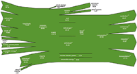
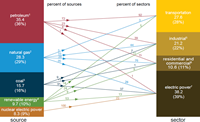

{kind=link}
{kind=link}
Total Energy
What's New in Monthly Energy Review
January 2017 PDF | previous editions
Release Date: January 27, 2017
Next Update: February 24, 2017
Listed below are changes in Monthly Energy Review content. Only months with changes beyond the standard updates are shown.
CONTENT CHANGES
| Changes in 2017 |
|---|
January 2017 release1. "Petroleum Consumption" tables 3.7a, 3.7b, and 3.7c, and "Heat Content of Petroleum Consumption" tables 3.8a, 3.8b, and 3.8c have been modified to reflect revised sector allocation estimates for motor gasoline. 2. "Renewable Energy Consumption" tables 10.2a and 10.2b have been modified to reflect revised sector allocation estimates for fuel ethanol.
|
| Changes in 2016 |
Year-end summary 20161. New Tables E1a and E1b, "Noncombustible Renewable Primary Energy Consumption: Conventional Hydroelectric Power, Geothermal, and Wind” and “Noncombustible Renewable Primary Energy Consumption: Solar and Total," have been added. Tables present renewable consumption data in British thermal units using an alternative approach to calculating the heat content of electricity generated from noncombustible renewables (December). 2. New Table 10.5, "Solar Energy Consumption," presents new and revised historical estimates of solar energy consumption in British thermal units. The data in the six “Distributed Solar Energy” columns in Table 10.5 replace the distributed solar energy data that used to appear in the “Solar/PV” columns on Table 10.2, “Renewable Energy Consumption.” See the July 2016 MER for reference (August). 3. New Table 10.6, "Solar Electricity Net Generation," presents newly available historical estimates of distributed (small-scale) solar energy generation and data on utility-scale solar electricity net generation in kilowatthours (August). |
December 2016 ReleaseNew Tables E1a and E1b, "Noncombustible Renewable Primary Energy Consumption: Conventional Hydroelectric Power, Geothermal, and Wind" and "Noncombustible Renewable Primary Energy Consumption: Solar and Total," have been added. Tables present renewable consumption data in British thermal units using an alternative approach to calculating the heat content of electricity generated from noncombustible renewables. |
November 2016 release1. Updated 2015 heat contents for petroleum (Table A2 and Table A3) have been incorporated. Revisions affect Btu data in Energy overview, Energy consumption by sector, Petroleum, and Environment. The revised 2015 heat contents are used as estimated 2016 heat contents. 2. Updated 2014 and 2015 heat contents for natural gas (Table A4) have been incorporated. Revisions affect data in Energy overview, Energy consumption by sector, and Environment. The revised 2015 heat contents are used as estimated 2016 heat contents. |
October 2016 release1. Final 2015 monthly and annual statistics for the supply and disposition of crude oil and petroleum products, coordinated with EIA's Petroleum Supply Annual 2015 Volume 2, have been incorporated. Revisions affect data series in Petroleum, Energy overview, Energy consumption by sector, Renewable energy, and Environment. 2. Natural gas statistics have been revised in coordination with EIA's Natural Gas Annual 2015. Revisions affect data series in Energy overview, Energy consumption by sector, Natural gas, Energy prices, and Environment. |
September 2016 releaseTable 7.6 "Electricity End Use," has been modified to remove two columns, "Discontinued Retail Sales Series: Commercial" and "Discontinued Retail Sales Series: Other." |
August 2016 release1. New Table 10.5, “Solar Energy Consumption,” presents new and revised historical estimates of solar energy consumption in British thermal units. The data in the six “Distributed Solar Energy” columns in Table 10.5 replace the distributed solar energy data that used to appear in the “Solar/PV” columns on Table 10.2, “Renewable Energy Consumption.” See the July 2016 MER for reference. 2. New Table 10.6, “Solar Electricity Net Generation,” presents newly available historical estimates of distributed (small-scale) solar electricity generation and data on utility-scale solar electricity net generation in kilowatthours. |
June 2016 releaseHeat Content of Petroleum and Other Liquids (Table A1) now has 2016 heat content factors for still gas and renewable fuels except fuel ethanol. Revisions affect Btu data in Energy Overview, Energy Consumption by Sector, Petroleum, and Environment. |
May 2016 release1. Final 2015 heat contents for petroleum (Table A2 and Table A3) have been incorporated. Revisions affect Btu data in Energy Overview, Energy Consumption by Sector, Petroleum, and Environment; the 2015 final heat contents are used as estimated 2016 heat contents. 2. Approximate Heat Content of Coal and Coal Coke (Table A5) includes revisions for 2014 and 2015 that affect data in Energy Overview, Energy Consumption, and Environment. |
February 2016 release1. Energy Overview, Energy Consumption by Sector, and Environment now include 2015 preliminary statistics for U.S. total energy consumption, production, trade, and carbon dioxide emissions. 2. Electricity statistics have been revised in coordination with EIA's Electric Power Annual 2014. Revisions affect data series in Energy Overview, Energy Consumption, Petroleum, Natural Gas, Coal, Electricity, Nuclear Energy, Energy Prices, Renewable Energy, and Environment. 3. Approximate Heat Content of Petroleum Consumption and Fuel Ethanol (Table A3) has a revised fuel ethanol feedstock factor for 2015. The revision affects data in Energy Overview, Energy Consumption by Sector, Renewable Energy, and Environment. 4. Approximate Heat Content of Natural Gas (Table A4) includes revisions for 2015 that affect data in Energy Overview, Energy Consumption by Sector, and Environment. |
January 2016 releaseApproximate Heat Content of Petroleum Consumption and Fuel Ethanol (Table A3) has revised petroleum consumption factors for 2014-2015. The revisions affect data in Energy Overview, Energy Consumption by Sector, Renewable Energy, and Environment. |
| Changes in 2015 |
Year-end summary 20151. New Table 2.7, "U.S. Government Energy Consumption by Agency, Fiscal Years" and new Table 2.8, "U.S. Government Energy Consumption by Source, Fiscal Years," have been added (October). 2. Table 1.9 and Table 1.10 have been modified to include annual degree-day data beginning in 1949 and monthly degree-day data beginning in 1973. Columns for "Normal" and "Percent Change" have been deleted (September). 3. Table 1.7 has been renamed "Primary Energy Consumption, Energy Expenditures, and Carbon Dioxide Emissions Indicators." The table has been modified to include a column for "Consumption per Capita"; four columns for "Energy Expenditures"; and three columns for "Carbon Dioxide Emissions." Columns for "Petroleum and Natural Gas," "Other Energy," and "Gross Domestic Product" have been deleted (August). 4. New Table C1, "Population, U.S. Gross Domestic Product, and U.S. Gross Output," has been added (August). 5. New Table D1, "Estimated Primary Energy Consumption in the United States, Selected .Years, 1635-1945," has been added (August). |
December 2015 releaseElectricity statistics for 2014 have been revised in coordination with EIA's Electric Power Monthly. Revisions affect data series in Energy Overview, Energy Consumption, Petroleum, Natural Gas, Coal, Electricity, Nuclear Energy, Energy Prices, Renewable Energy, and Environment. Final 2014 heat content rates for electricity (Table A6) have also been incorporated. |
October 2015 release1. New Table 2.7, "U.S. Government Energy Consumption by Agency, Fiscal Years" and new Table 2.8, "U.S. Government Energy Consumption by Source, Fiscal Years," have been added. 2. Natural gas statistics have been revised in coordination with EIA's Natural Gas Annual 2014. Revisions affect data series in Energy Overview, Energy Consumption by Sector, Natural Gas, Energy Prices, Environment, and Approximate Heat Content of Natural Gas. |
September 2015 release1. Table 1.9 and Table 1.10 have been modified to include annual degree-day data beginning in 1949 and monthly degree-day data beginning in 1973. Columns for "Normal" and "Percent Change" have been deleted. 2. Final 2014 monthly and annual statistics for the supply and disposition of crude oil and petroleum products, coordinated with EIA's Petroleum Supply Annual 2014 Volume 2, have been incorporated. Revisions affect data series in Petroleum, Energy Overview, Energy Consumption by Sector, Renewable Energy, and Environment. 3. Final 2014 heat contents for petroleum (Table A2 and Table A3) have been incorporated. Revisions affect Btu data in Energy Overview, Energy Consumption by Sector, Petroleum, and Environment; the 2014 final heat contents are used as estimated 2015 heat contents. |
August 2015 release1. Table 1.7 has been renamed "Primary Energy Consumption, Energy Expenditures, and Carbon Dioxide Emissions Indicators." The table has been modified to include a column for "Consumption per Capita"; four columns for "Energy Expenditures"; and three columns for "Carbon Dioxide Emissions." Columns for "Petroleum and Natural Gas," "Other Energy," and "Gross Domestic Product" have been deleted. 2. New Table C1, "Population, U.S. Gross Domestic Product, and U.S. Gross Output," has been added. 3. New Table D1, "Estimated Primary Energy Consumption in the United States, Selected Years, 1635-1945," has been added. |
May 2015 releaseBiodiesel and Other Renewable Fuels Overview (Table 10.4) was previously titled "Biodiesel Overview." The table has been modified to include a column for "Other Renewable Fuels." The column for "Balancing Item" has been deleted. In addition, the "Stocks" and "Stock Change" columns have been revised to include biodiesel only for 2011 forward. |
April 2015 release1. Approximate Heat Content of Petroleum Consumption and Fuel Ethanol (Table A3) has revised fuel ethanol feedstock factors for 2003-2015. The revisions affect data in Energy Overview, Energy Consumption by Sector, Renewable Energy, and Environment. 2. Approximate Heat Content of Natural Gas (Table A4) includes revisions for 2014 that affect data in Energy Overview, Energy Consumption by Sector, and Environment. 3. Approximate Heat Content of Coal and Coal Coke (Table A5) includes revisions for 2013 and 2014 that affect data in Energy Overview, Energy Consumption by Sector, and Environment. |
March 2015 release1. Energy Overview, Energy Consumption by Sector, and Environment now include 2014 preliminary statistics for U.S. total energy consumption, production, trade, and carbon dioxide emissions. 2. Electricity statistics have been revised in coordination with EIA's Electric Power Annual 2013. Revisions affect data series in Energy Overview, Energy Consumption, Petroleum, Natural Gas, Coal, Electricity, Nuclear Energy, Energy Prices, Renewable Energy, and Environment. Final 2013 heat content rates for electricity (Table A6) have also been incorporated. |
February 2015 releaseTable 1.8 (Motor Vehicle Mileage, Fuel Consumption, and Fuel Economy) now has 2013 data and revised 2012 data. |
January 2015 release1. Table A1 has been renamed "Heat Content of Petroleum and Other Liquids," and heat content factors are added for aviation gasoline blending components; distillate fuel oil by sulfur content; hydrogen; motor gasoline blending components (MGBC); oxygenates (excluding fuel ethanol); petroleum coke by type; renewable fuels except fuel ethanol; and other hydrocarbons. Revisions affect Btu data in Energy Overview, Energy Consumption by Sector, Petroleum, and Environment. 2. Table A2 has been modified to include columns for "Motor Gasoline Imports" and "Motor Gasoline Exports." Revisions affect Btu data in Energy Overview. 3. Table A3 has been renamed "Heat Content of Petroleum Consumption and Fuel Ethanol." The table has been modified to include columns for "Distillate Fuel Oil Consumption" and "Petroleum Coke Consumption" heat content factors. The columns for "Motor Gasoline Consumption (Old)," "Biodiesel," and "Biodiesel Feedstock" factors have been removed. The "Motor Gasoline Consumption (New)" heat content factors have been renamed "Motor Gasoline Consumption" and are now used in the MER to derive Btu data for motor gasoline, total petroleum products, and total petroleum in Sections 1–3. Revisions affect Btu data in in Energy Overview, Energy Consumption by Sector, Petroleum, and Environment. |
| Changes in 2014 |
November 2014 ReleaseNatural gas statistics have been revised in coordination with EIA's Natural Gas Annual 2013. Revisions affect data series in Energy Overview, Energy Consumption by Sector, Natural Gas, Energy Prices, Environment, and Approximate Heat Content of Natural Gas. |
October 2014 ReleaseThis issue marks 40 years of continuous publication of the Monthly Energy Review, beginning with the October 1974 issue. See Note to Readers in the October 2014 issue. |
September 2014 Release1. Updated 2013 monthly and annual statistics for the supply and disposition of crude oil and petroleum products, coordinated with EIA's Petroleum Supply Annual 2013 Volume 2, have been incorporated. Revisions affect data series in Petroleum, Energy Overview, Energy Consumption by Sector, Renewable Energy, and Environment. 2. Updated 2013 heat contents for petroleum (Table A2 and Table A3) have been incorporated. Revisions affect Btu data in Energy Overview, Energy Consumption by Sector, Petroleum, and Environment; the 2013 final heat contents are used as estimated 2014 heat contents. 3. Table A3 has been modified to include a column for "Motor Gasoline Consumption (New)" heat content factors. The "Motor Gasoline Consumption (New)" factors will be used in a future MER to derive Btu data for motor gasoline, total petroleum products, and total petroleum in Sections 1–3. |
April 2014 ReleaseApproximate Heat Content of Coal and Coal Coke (Table A5) includes revisions for 2013 that affect Btu data in Energy Overview, Energy Consumption, and Environment; the 2013 preliminary heat contents are used as estimated 2014 heat contents. |
March 2014 Release1. Energy Overview, Energy Consumption by Sector, and Environment now include 2013 preliminary statistics for U.S. total energy consumption, production, trade, and carbon dioxide emissions. 2. Petroleum heat content revisions (Tables A2 and A3) affect Btu data in Energy Overview, Energy Consumption by Sector, Petroleum, and Environment. |
February 2014 ReleaseMotor Vehicle Mileage, Fuel Consumption, and Fuel Economy (Table 1.8) now has 2012 data and revised 2011 data. |
January 2014 Release1. Natural gas statistics have been revised in coordination with EIA's Natural Gas Annual 2012 and December 2013 Natural Gas Monthly. Revisions affect data series in Energy Overview, Energy Consumption by Sector, Natural Gas, Energy Prices, and Environment. 2. Natural Gas Overview (Table 4.1) has been modified to change the data series previously called "Extraction Loss" to Natural Gas Plant Liquids (NGPL) Production." For more information, visit http://www.eia.gov/ngl/. 3. Nuclear Energy Overview (Table 8.1) has been modified to incorporate revised net summer capacity and capacity factor data for 2008 forward based on a new methodology published in the Electric Power Monthly. 4. Approximate Heat Content of Natural Gas (Table A4) includes revisions for 2011-2013 that affect Btu data in Energy Overview, Energy Consumption by Sector, and Environment. 5. Approximate Heat Content of Coal and Coal Coke (Table A5) includes revisions for 2012 and 2013 that affect Btu data in Energy Overview, Energy Consumption, and Environment. |
| Changes in 2013 |
December 2013 ReleaseElectricity statistics have been revised in coordination with EIA's Electric Power Annual 2012. Revisions affect data series in Energy Overview, Energy Consumption, Petroleum, Natural Gas, Coal, Electricity, Nuclear Energy, Energy Prices, Renewable Energy, and Environment. Final 2012 heat content values for electricity (Table A6) have also been incorporated. |
October 2013 Release1. Excel and CSV files now include pre-1973 data for all series except for Section 12. The Excel files now have two worksheets, one for monthly data and one for annual data. 2. The Monthly Energy Review now includes interactive data tables and graphs. The tables allow users to add and delete series from graphs, adjust the time frame for a table, toggle between monthly and annual data, and download tables and graphs. The interactive tables are currently on EIA's Beta site. 3. Final 2012 monthly and annual statistics for the supply and disposition of crude oil and petroleum products, coordinated with EIA's Petroleum Supply Annual 2012 Volume 2, have been incorporated. Revisions affect data series in Petroleum, Energy Overview, Energy Consumption by Sector, Renewable Energy, and Environment. 4. Final 2012 heat content values for petroleum (Table A2 and Table A3) have been incorporated. Revisions affect Btu data in Energy Overview, Energy Consumption by Sector, and Environment; the 2012 final heat contents are used as estimated 2013 heat contents. 5. Revisions for 2008-2012 heat content values for coal (Table A5) have been incorporated. Revisions affect Btu data in Energy Overview, Energy Consumption by Sector, and Environment; the 2012 final heat contents are used as estimated 2013 heat contents. 6. Biodiesel Overview (Table 10.4) has been revised for 2001-2011 due to a new conversion factor for biodiesel trade. Data for 2012 have been revised in coordination with EIA's Petroleum Supply Annual 2012 Volume 2 and Monthly Biodiesel Production Report. Revisions affect data series in Energy Overview, Energy Consumption by Sector, Renewable Energy, and Environment. |
September 2013 ReleaseData for years prior to 1973 are incorporated into Energy Overview. EIA has now expanded Sections 1 through 10 and Appendix A of the Monthly Energy Review (MER) to incorporate annual data as far back as 1949 in those data tables that are currently published in both the Annual Energy Review (AER) and MER. Similar revisions are pending for Section 12. |
August 2013 ReleaseData for years prior to 1973 are incorporated into Energy Consumption by Sector and Petroleum. During 2013, EIA will continue expanding the Monthly Energy Review (MER) to incorporate annual data as far back as 1949 in those data tables that are currently published in both the Annual Energy Review (AER) and MER. |
July 2013 ReleaseData for years prior to 1973 are incorporated into Natural Gas, Crude Oil and Natural Gas Resource Development, and Coal. During 2013, EIA will continue expanding the Monthly Energy Review (MER) to incorporate annual data as far back as 1949 in those data tables that are currently published in both the Annual Energy Review (AER) and MER. |
June 2013 ReleaseData for years prior to 1973 are incorporated into Electricity and Nuclear Energy. During 2013, EIA will continue expanding the Monthly Energy Review (MER) to incorporate annual data as far back as 1949 in those data tables that are currently published in both the Annual Energy Review (AER) and MER. |
May 2013 Release1. Data for years prior to 1973 are incorporated into Energy Prices and Renewable Energy. During 2013, EIA will continue expanding the Monthly Energy Review (MER) to incorporate annual data as far back as 1949 in those data tables that are currently published in both the Annual Energy Review (AER) and MER. 2. Table 9.4 has been renamed "Retail Motor Gasoline and On-Highway Diesel Fuel Prices" and now includes on-highway diesel fuel prices and regular motor gasoline prices in conventional gasoline areas, reformulated gasoline areas, and all areas. |
April 2013 Release1. Heat content values for years prior to 1973 are incorporated into Appendix A. During 2013, EIA will continue expanding the Monthly Energy Review (MER) to incorporate annual data for 1949 through 1972 in data tables that are currently published in both the Annual Energy Review (AER) and MER. 2. The data previously published for residential sector coal consumption is now included in other commercial sector coal consumption for 2008 forward. This change affects data in Energy Consumption by Sector, Coal, and Environment. |
March 2013 Release1. Energy Overview, Energy Consumption by Sector, and Environment now include 2012 preliminary statistics for U.S. total energy consumption, production, trade, and carbon dioxide emissions. 2. Petroleum heat content revisions (Tables A2 and A3) affect Btu data in Energy Overview, Energy Consumption by Sector, Petroleum, and Environment. |
January 2013 Release1. Natural gas statistics have been revised in coordination with EIA's Natural Gas Annual 2011 and December 2012 Natural Gas Monthly. Revisions affect data series in Energy Overview, Energy Consumption by Sector, Natural Gas, Energy Prices, and Environment. 2. Approximate Heat Content of Natural Gas (Table A4) includes revisions for 2010-2012 that affect Btu data in Energy Overview, Energy Consumption by Sector, and Environment. |
| Changes in 2012 |
November 2012 Release1. Electricity statistics have been revised in coordination with EIA's October 2012 Electric Power Monthly. Revisions affect data series in Energy Overview, Energy Consumption, Petroleum, Natural Gas, Coal, Electricity, Nuclear Energy, Energy Prices, Renewable Energy, and Environment. 2. Approximate Heat Rates for Electricity, and Heat Content of Electricity (Table A6) includes revisions for approximate heat rates for electricity net generation at fossil-fueled plants and nuclear plants for 2011 and 2012. Revisions affect data series in Energy Overview, Energy Consumption by Sector, and Renewable Energy. |
October 2012 Release
1. The following tables are deleted: 2. The following tables are renumbered: September 2012 MER October 2012 MER
9.9 9.8 |
September 2012 Release1. Motor Vehicle Mileage, Fuel Consumption, and Fuel Economy (Table 1.8) has been modified to reflect the Federal Highway Administration's revised vehicle classifications. For 2007 forward, data are now provided for Light-Duty Vehicles, Short Wheelbase; Light-Duty Vehicles, Long Wheelbase; and Heavy-Duty Trucks. 2. Crude Oil and Natural Gas Exploratory and Development Wells (Table 5.2) has been modified to remove data for 2011 forward. In addition, data for 2008 through 2010 have been revised. 3. Final 2011 monthly and annual statistics for the supply and disposition of crude oil and petroleum products, coordinated with EIA's Petroleum Supply Annual 2011 Volume 2, have been incorporated. Revisions affect data series in Petroleum, Energy Overview, Energy Consumption by Sector, Renewable Energy, and Environment. 4. Final 2011 heat content values for petroleum imports and exports (Table A2) and total petroleum consumption and liquefied petroleum gases consumption (Table A3) have been incorporated. Revisions affect Btu data in Energy Overview; the 2011 final heat contents are used as estimated 2012 heat contents. |
May 2012 Release1. Biodiesel Overview (Table 10.4) now incorporates monthly biodiesel production data for 2009 forward from Form EIA-22M, "Monthly Biodiesel Production Survey." 2. Approximate Heat Content of Coal and Coal Coke (Table A5) includes revisions for 2009-2011 that affect data in Energy Overview, Energy Consumption by Sector, and Environment. |
April 2012 Release1. Approximate Heat Content of Natural Gas (Table A4) includes revisions for 2011 that affect Btu data in Energy Overview, Energy Consumption by Sector, and Environment. 2. Beginning with the April Monthly Energy Review, Petroleum Overview (Table 3.1) includes monthly revisions to crude oil production, total field production, and adjustments in coordination with the Petroleum Supply Monthly. For more details on the new revision policy, visit http://www.eia.gov/petroleum/supply/monthly/. 3. Nuclear Energy Overview (Table 8.1) now incorporates monthly net summer capacity data from the Form EIA-860M, "Monthly Update to the Annual Electric Generator Report," for 2010 forward. |
March 2012 Release1. Energy Overview, Energy Consumption by Sector, and Environment now include 2011 preliminary statistics for U.S. total energy consumption, production, trade, and carbon dioxide emissions. 2. Petroleum heat content (Table A2) revisions affect Btu data in Energy Overview, Energy Consumption by Sector, Petroleum, and Environment. 3. Fuel ethanol heat content (Table A3) revisions affect Btu data in Energy Overview, Energy Consumption by Sector, Renewable Energy, and Environment. 4. Fuel ethanol feedstock factors (Table A3) are revised for 2010 and 2011 and affect Btu data in Energy Overview, Energy Consumption by Sector, Renewable Energy, and Environment. |
January 2012 Release1. Natural gas statistics have been revised in coordination with EIA's Natural Gas Annual 2010 and December 2011 Natural Gas Monthly. Revisions affect data series in Energy Overview, Energy Consumption by Sector, Natural Gas, Energy Prices, and Environment. 2. Industrial Sector Energy Consumption (Table 2.4) has been modified to include a column for "Wind." 3. Renewable Energy Consumption: Industrial and Transportation Sectors (Table 10.2b) has been modified to include a column for "Industrial Sector Wind." 4. Approximate Heat Content of Natural Gas (Table A4) includes revisions for 2002, 2003, 2007, 2010, and 2011 that affect Btu data in Energy Overview, Energy Consumption by Sector, and Environment. 5. Approximate Heat Rates for Electricity, and Heat Content of Electricity (Table A6) has been reconfigured to display columns for "Coal," "Petroleum," "Natural Gas," and "Noncombustible Renewable Energy" and to delete the "Geothermal" column. |
| Changes in 2011 |
December 2011 ReleaseElectricity statistics have been revised in coordination with EIA's Electric Power Annual 2010 and December 2011 Electric Power Monthly. Revisions affect data series in Energy Overview, Energy Consumption by Sector, Petroleum, Natural Gas, Coal, Electricity, Nuclear Energy, Energy Prices, Renewable Energy, and Environment. |
November 2011 Release"Maximum U.S. Active Seismic Crew Counts" (previously Table 5.3) has been deleted from the Monthly Energy Review due to recent EIA budget cuts. Beginning with August 2011, biodiesel production data are not available from the Bureau of the Census; in their place, forecast data from EIA's Short-Term Integrated Forecasting will be used in Biodiesel Overview (Table 10.4) until survey data from EIA's Monthly Biodiesel Production Report are available. |
September 2011 ReleaseMaximum U.S. Active Seismic Crew Counts (Table 5.3) no longer includes new data for August 2011 forward due to recent EIA budget cuts. |
August 2011 Release1. Final 2010 monthly and annual statistics for the supply and disposition of crude oil and petroleum products, coordinated with EIA's Petroleum Supply Annual 2010 Volume 2, have been incorporated. Revisions affect data series in Petroleum, Energy Overview, Energy Consumption by Sector, Renewable Energy, and Environment. 2. Final 2010 heat content values for petroleum imports and exports (Table A2) and total petroleum consumption and liquefied petroleum gases consumption (Table A3) have been incorporated. Revisions affect Btu data in Energy Overview; the 2010 final heat contents are used as estimated 2011 heat contents. |
June 2011 ReleaseNo. 2 Distillate Prices to Residences: Northeastern States (Table 9.8a), No. 2 Distillate Prices to Residences: Selected South Atlantic and Midwestern States (Table 9.8b), and No. 2 Distillate Prices to Residences: Selected Western States and U.S. Average (Table 9.8c) no longer include new data for March 2011 forward due to recent EIA budget cuts. |
April 2011 ReleaseBeginning with the April 2011 Monthly Energy Review, the fossil-fuels heat rate is used as the thermal conversion factor for geothermal electricity net generation in order to treat geothermal electricity net generation similarly to electricity net generation from other non-combustible renewable energy sources – hydroelectric power, wind, photovoltaic, and solar thermal energy. The technology-based geothermal heat rates are no longer used in Btu calculations in this report. This change affects data series in Primary Energy Production by Source (Table 1.2), Primary Energy Consumption by Source (Table 1.3), Energy Consumption per Dollar of Gross Domestic Product (Table 1.7), Electric Power Energy Consumption (Table 2.6), Renewable Energy Production and Consumption by Source (Table 10.1), and Renewable Energy Consumption: Electric Power Sector (Table 10.2c). |
March 2011 ReleaseEnergy Overview, Energy Consumption, and Environment now include 2010 preliminary statistics for U.S. total energy consumption, production, trade, and carbon dioxide emissions. |
February 2011 Release1. The units for columns 2 and 4 in Cost of Fuels to End Users in Real (1982-1984) Dollars (Table 1.6) have been changed from cents per gallon to dollars per gallon. The units for column 6 have been changed from cents per thousand cubic feet to dollars per thousand cubic feet. 2. Commercial Sector Energy Consumption (Table 2.3) has been modified to include a column for "Wind." 3. Industrial Sector Energy Consumption (Table 2.4) has been modified to include a column for "Solar/PV." 4. Renewable Energy Consumption: Residential and Commercial Sectors (Table 10.2a) has been modified to include a column for Commercial Sector Wind. 5. Renewable Energy Consumption: Industrial and Transportation Sectors (Table 10.2b) has been modified to include a column for Industrial Sector Solar/PV. 6. Carbon Dioxide Emissions From Biomass Energy Consumption (Table 12.7) is new in the Monthly Energy Review. |
January 2011 ReleaseThe units for Motor Gasoline Retail Prices, U.S. City Average (Table 9.4), Refiner Prices of Residual Fuel Oil (Table 9.5), Refiner Prices of Petroleum Products for Resale (Table 9.6), Refiner Prices of Petroleum Products to End Users (Table 9.7), No. 2 Distillate Prices to Residences, Northeastern States (Table 9.8a): No. 2 Distillate Prices to Residences: Selected South and Midwestern States (Table 9.8b), and No. 2 Distillate Prices to Residences: Selected Western States and U.S. Average (Table 9.8c) have been changed from cents per gallon to dollars per gallon. Electricity statistics have been revised in coordination with EIA's Electric Power Annual 2009 and January 2011 Electric Power Monthly. Revisions affect data series in Energy Overview, Energy Consumption, Petroleum, Natural Gas, Coal, Electricity, Nuclear Energy, Energy Prices, Renewable Energy, and Environment. Natural gas statistics have been revised in coordination with EIA's Natural Gas Annual 2009 and December 2010 Natural Gas Monthly. Revisions affect data series in Energy Overview, Energy Consumption, Natural Gas, Energy Prices, and Environment. |
| Changes in 2010 |
December 2010 Release1) The approximate heat rates for electricity net generation at fossil-fueled plants and nuclear plants (Table A6) have been revised for 2009 and 2010. Revisions affect data series in Energy Overview, Energy Consumption by Sector, and Renewable Energy. 2) Monthly data have been added as follows: 1997: CSV files for Primary Energy Overview (Table 1.1) and Primary Energy Production by Source (Table 1.2); 1997: Excel files for Primary Energy Overview (Table 1.1) and Primary Energy Production by Source (Table 1.2); 1973-2000: CSV files for Natural Gas Overview (Table 4.1); 1973-2000: Excel files for Natural Gas Overview (Table 4.1). |
October 2010 Release1) Liquefied Petroleum Gases and "Other" data in Heat Content of Petroleum Products Supplied by Type (Table 3.6) have been revised beginning in 1973 due to a change in the estimation methodology. See Table 3.6 Sources for "Liquefied Petroleum Gases (LPG) Total" and "Other Petroleum Products" for details. Revisions affect data series in Energy Overview, Energy Consumption by Sector, Renewable Energy, and Environment. 2) Carbon dioxide emissions factors for coal, motor gasoline, and motor gasoline blending components have been revised beginning in 1990 and affect data series in Environment. |
September 2010 ReleasePetroleum heat content revisions (Table A2 and Table A3) affect Btu data in Energy Overview, Energy Consumption by Sector, Petroleum, and Environment. |
August 2010 Release1) Final 2009 monthly and annual statistics for the supply and disposition of crude oil and petroleum products, coordinated with EIA's Petroleum Supply Annual 2009 Volume 2, have been incorporated, affecting data series in Petroleum, Energy Overview, Energy Consumption by Sector, Renewable Energy, and Environment. 2) On Natural Gas Trade by Country (Table 4.2), under "Imports," the "Oman" column has been removed; data in "Other" have been adjusted. Under "Exports," an "Other" column has been added. 3) Commercial Sector Energy Consumption (Table 2.3) has been modified to include a column for "Solar/PV." |
May 2010 Release1) Production data for January 2008 through March 2009 in Biodiesel Overview (Table 10.4) are revised to incorporate data from EIA's Monthly Biodiesel Production Report. Revisions affect data series in Energy Overview and Energy Consumption by Sector. 2) A column for Commercial Sector Solar/PV is added to Renewable Energy Consumption: Residential and Commercial Sectors (Table 10.2a). |
April 2010 Release1) Approximate Heat Content of Natural Gas (Table A4) includes revisions for 2003-2005 and 2007-2009 that affect Btu data in Energy Overview, Energy Consumption by Sector, and Environment. 2) Approximate Heat Content of Coal and Coal Coke (Table A5) include revisions for 2008 and 2009 that affect Btu data in Energy Overview, Energy Consumption by Sector, and Environment. 3) Data for residential and commercial consumption of liquefied petroleum gases in Petroleum Consumption: Residential and Commercial Sectors are revised beginning in 1973 due to a change in the estimation methodology. See Tables 3.7a–3.7c Sources for "Liquefied Petroleum Gases" for details. Revisions affect data series in Energy Consumption by Sector, Petroleum, and Environment. |
March 2010 Release1) Energy Overview, Energy Consumption by Sector, and Environment include the first complete set of 2009 preliminary statistics for U.S. total energy consumption, production, trade, and carbon dioxide emissions. 2) Fuel Ethanol Overview (Table 10.3) is modified to include columns for denaturant and consumption minus denaturant; columns for imports and exports are deleted. 3) Petroleum heat content revisions (Table A2) and affect Btu data in Energy Overview, Energy Consumption by Sector, Petroleum, and Environment. 4) Fuel ethanol heat contents (Table A3) are revised to include denaturant and affect Btu data in Energy Overview, Energy Consumption by Sector, Renewable Energy, and Environment. 5) Fuel ethanol feedstock factors (Table A3) for 2003-2010 are revised to incorporate a newly obtained 2009 observed ethanol yield and affect Btu data in Energy Overview, Energy Consumption by Sector, Renewable Energy, and Environment. 6) Electricity statistics are revised in coordination with EIA's Electric Power Annual 2008 and March 2010 Electric Power Monthly. Revisions affect data series in Energy Overview, Energy Consumption by Sector, Petroleum, Natural Gas, Coal, Electricity, Nuclear, Energy Prices, Renewable Energy, and Environment. 7) Natural gas statistics are revised in coordination with EIA's Natural Gas Annual 2008 and February 2010 Natural Gas Monthly. Revisions affect data series in Energy Overview, Energy Consumption by Sector, Natural Gas, Energy Prices, and Environment. |
February 2010 Release1) Motor Vehicle Mileage, Fuel Consumption, and Fuel Rates (Table 1.8) includes the annual update (i.e., new 2008 data and revised 2007 data). 2) The approximate heat rate for electricity net generation at fossil-fueled plants (Table A6) is revised for 2008 and 2009. Revisions affect data series in Energy Overview, Energy Consumption by Sector, Renewable Energy, Environment. 3) The approximate heat rate for electricity net generation at nuclear plants (Table A6) is revised for 2001, 2002, and 2005-2009. Revisions affect data series in Energy Overview, Energy Consumption by Sector. |
January 2010 Release1) The units for Motor Gasoline Retail Prices, U.S. City Average (Table 9.4), Refiner Prices of Residual Fuel Oil (Table 9.5), Refiner Prices of Petroleum Products for Resale (Table 9.6), Refiner Prices of Petroleum Products to End Users (Table 9.7), No. 2 Distillate Prices to Residences, Northeastern States (Table 9.8a): No. 2 Distillate Prices to Residences: Selected South and Midwestern States (Table 9.8b), and No. 2 Distillate Prices to Residences: Selected Western States and U.S. Average (Table 9.8c) have been changed from cents per gallon to dollars per gallon. 2) Electricity statistics have been revised in coordination with EIA's Electric Power Annual 2009 and January 2011 Electric Power Monthly. Revisions affect data series in Energy Consumption by Sector, Petroleum, Natural Gas, Coal, Electricity, Nuclear Energy, Energy Prices, Renewable Energy, and Environment. 3) Natural gas statistics have been revised in coordination with EIA's Natural Gas Annual 2009 and December 2010 Natural Gas Monthly. Revisions affect data series in Energy Overview, Energy Consumption by Sector, Natural Gas, Energy Prices, and Environment. |
| Changes in 2009 |
December 2009 ReleaseEnvironment (Section 12) is new in the Monthly Energy Review. It includes the following tables: Carbon Dioxide Emissions From Energy Consumption by Source (Table 12.1), which replaces previously published Table 1.11, "Carbon Dioxide Emissions From Fossil Fuel Consumption by Source." Data for all years are revised due to a change in methodology and sources. See "Section 12 Methodology and Sources" for details. Carbon Dioxide Emissions From Energy Consumption: Residential Sector (Table 12.2), which is new in the Monthly Energy Review. Carbon Dioxide Emissions From Energy Consumption: Commerical Sector (Table 12.3), which is new in the Monthly Energy Review. Carbon Dioxide Emissions From Energy Consumption: Industrial Sector (Table 12.4), which is new in the Monthly Energy Review. Carbon Dioxide Emissions From Energy Consumption: Transportation Sector (Table 12.5), which is new in the Monthly Energy Review. Carbon Dioxide Emissions From Energy Consumption: Electric Power Sector (Table 12.6), which is new in the Monthly Energy Review. |
October 2009 ReleaseMonthly data are added as follows: 1973-1996 and 1998-2000: CSV files for Primary Energy Overview (Table 1.1) and Primary Energy Production by Source (Table 1.2). 1996: Excel files for Primary Energy Overview (Table 1.1) and Primary Energy Production by Source (Table 1.2). Note: Additional review of the data is needed before 1997 monthly data can be released. |
September 2009 Release1) Final 2008 monthly and annual crude oil and petroleum product prices, coordinated with EIA's Petroleum Marketing Annual 2008, are included in Energy Prices (Tables 9.1-9.8c). 2) Historical monthly and annual data for 1973-1983 are added to Carbon Dioxide Emissions from Fossil Fuel Consumption by Source (Table 1.11). |
August 2009 Release1) Carbon Dioxide Emissions from Fossil Fuel Consumption by Source (Table 1.11) is new in the Monthly Energy Review. 2) Energy Consumption per Dollar of Gross Domestic Product (Table 1.7) carries the gross domestic product (GDP) data rebased from chained 2000 dollars to chained 2005 dollars, and the "Energy Consumption per Dollar of GDP" series are recalculated. 3) Monthly data for 1995-2001 are added to the CSV file for Cost of Fuels to End Users in Real (1982-1984) Dollars (Table 1.6). |
July 2009 Release1) Final 2008 monthly and annual statistics for the supply and disposition of crude oil and petroleum products, coordinated with EIA's Petroleum Supply Annual 2008 Volume 2, are included in Petroleum, Energy Overview, Energy Consumption by Sector, and Renewable Energy. Also incorporated are final 2008 heat content values for petroleum imports and exports (Table A2) and total petroleum consumption and liquefied petroleum gases consumption (Table A3), affecting Btu data in Energy Overview and Energy Consumption by Sector; the 2008 final heat contents are used as estimated 2009 heat contents. 2) A major revision was made in the number of wells drilled (Table 5.2) for the March 2006 data in one State. At the same time, numerous other small pending changes were incorporated, resulting in revisions from 1990 forward. 3) Annual vehicle fuel prices are added to Natural Gas Prices (Table 9.11). 4) Monthly data are added as follows: 1973-2000: Excel and CSV files for Tables 1.3, 1.4a, and 1.4b in Energy Overview; all tables in Energy Consumption by Sector; and Natural Gas Consumption by Sector (Table 4.3). 1995-2001: Excel file for Cost of Fuels to End Users in Real (1982-1984) Dollars (Table 1.6); the CSV file will be expanded in a later release. 1973-1995 and 1998-2000: Excel files for Primary Energy Overview (Table 1.1) and Primary Energy Production by Source (Table 1.2); the CSV files will be expanded in a later release. (Additional review of the data is needed before 1996 and 1997 monthly data can be released.). Note: 1973-2000 monthly data for Natural Gas Overview (Table 4.1) are still under review. |
April 2009 Release1) Petroleum Overview (Table 3.1) is expanded to include renewable fuels and oxygenate plant net production data beginning in 2009.
2) Indonesia suspended its membership in the Organization of the Petroleum Exporting Countries (OPEC) at the end of 2008 and is now: 3) Biodiesel Overview (Table 10.4) is expanded to include a "Balancing Item" column. 4) Approximate Heat Content of Natural Gas (Table A4), Approximate Heat Content of Coal and Coal Coke (Table A5), and Approximate Heat Rates for Electricity, and Heat Content of Electricity (Table A6) include revisions for 2007 and 2008 that affect Btu data in and Energy Consumption by Sector. |
March 2009 Release1) Energy Overview and Energy Consumption by Sector include the first complete set of 2008 preliminary statistics for U.S. total energy consumption, production, and trade. 2) Primary Energy Overview (Table 1.1) is expanded to include production and consumption by type---that is, fossils fuels, nuclear electric power, and renewable energy; and net imports statistics are added. 3) In Primary Energy Imports by Source (Table 1.4a), fuel ethanol is replaced with biofuels, which is fuel ethanol and biodiesel. 4) Primary Energy Imports by Source (Table 1.4b) is expanded to display biofuels. 5) In Fuel Ethanol Overview (Table 10.3), fuel ethanol imports and exports are now displayed but, to date, exports statistics are not available. 6) Biodiesel Overview (Table 10.4) is expanded to display trade, stocks, stock change, and consumption. 7) Petroleum heat content revisions (Table A2 and Table A3) affect Btu data in Energy Overview, Energy Consumption by Sector, and Petroleum. 8) Fuel ethanol feedstock factor revisions (Table A3) affect Btu data in Energy Overview, Energy Consumption by Sector, and Renewable Energy. 9) Nuclear heat rate revisions (Table A3) affect Btu data in Energy Overview and Energy Consumption by Sector. |
February 2009 Release1) Natural gas statistics are revised for 2005 forward in coordination with EIA's Natural Gas Annual 2007 and January 2009 Natural Gas Monthly. Revisions affect data series in Energy Overview (Tables 1.1, 1.2, 1.3, 1.4a, 1.4b, 1.6, and 1.7); Energy Consumption by Sector; Natural Gas; Energy Prices (Tables 9.10 and 9.11); and Approximate Heat Content of Natural Gas. 2) Electricity statistics are revised, in some cases for 2004-2007, in coordination with EIA's Electric Power Annual 2007 and February 2009 Electric Power Monthly. Revisions affect data series in Energy Overview (Tables 1.1, 1.2, 1.3, 1.4a, 1.4b, and 1.6); Energy Consumption by Sector; Petroleum (Tables 3.7b, 3.7c, 3.8b, 3.8c); Natural Gas (Tables 4.1 and 4.3); Coal; Electricity; Nuclear; Energy Prices (Tables 9.10 and 9.11); and Renewable Energy (Tables 10.1, 10.2a, 10.2b, and 10.2c). |
January 2009 Release"Motor Vehicle Mileage, Fuel Consumption, and Fuel Rates" (Table 1.8) includes the annual update (i.e., new 2007 data and revised 2006 data). |
| Changes in 2008 |
November 2008 ReleaseThe transition of electricity statistics to incorporate data from the new survey Form EIA-923, "Power Plant Operations Report" that began in the April 2008 Monthly Energy Review is completed. Statistics in Electricity (Section 7) no longer include forecast values derived from EIA's Short-Term Integrated Forecasting System. |
September 2008 Release1) Crude oil and natural gas wells drilled data (Table 5.2) are revised for 1990 forward to reflect (a) the change in definition of a new well as the first hole in the ground whether it is lateral or not (previously, any sidetrack footages were excluded), and (b) final revisions to well classification and type (i.e., exploratory or development; crude oil, natural gas, or dry). 2) Beginning in 2008, data are now available for coal stocks in the residential and commercial sectors (Table 6.3). 3) Final 2007 monthly and annual crude oil and petroleum product prices, coordinated with EIA's Petroleum Marketing Annual 2007, are included in Energy Prices (Tables 9.1-9.8). 4) The presentation order of Figures 11.1a and 11.1b are switched with Tables 11.1a and 11.1b in the Portable Document Format (PDF) files (Section 11). |
August 2008 Release1) Final 2007 monthly and annual statistics for the supply and disposition of crude oil and petroleum products, coordinated with EIA's Petroleum Supply Annual 2007 Volume 2, are included in Petroleum, Energy Overview, and Energy Consumption by Sector. Also incorporated are final 2007 heat content values for petroleum imports and exports (Table A2) and total petroleum consumption and liquefied petroleum gases consumption (Table A3), affecting Btu data in "Energy Overview" and "Energy Consumption by Sector"; the 2007 final heat contents are used as estimated 2008 heat contents. 2) Under "Imports" in Natural Gas Trade by Country (Table 4.2), columns are added for Egypt and Oman; the column for Australia is removed; and the data in "Other" are adjusted. |
April 2008 Release1) Electricity statistics are undergoing an upgrade to incorporate data from the new survey Form EIA-923, "Power Plant Operations Report." Until the conversion is completed, forecast values derived from EIA's Short-Term Integrated Forecasting System will be used in Electricity (Section 7). 2) Ecuador rejoined the Organization of the Petroleum Exporting Countries (OPEC) in November 2007 and is now: — Included in the OPEC data in Petroleum Trade: Imports from OPEC Countries (Table 3.3c) for 1973-1992 and again beginning in January 2008. — Included in the Non-OPEC data in Petroleum Trade: Imports from Non-OPEC Countries (Table 3.3d) from 1993 through December 2007. — Added to World Crude Oil Production: OPEC Members (Table 11.1a) for all time periods on this table. — Removed from World Crude Oil Production: Non-OPEC Members (Table 11.1b) for all time periods on this table. 3) Columns are added to Fuel Ethanol Overview (Table 10.3) to show fuel ethanol production and consumption in million gallons. 4) A column is added to Biodiesel Overview (Table 10.4) to show biodiesel production in million gallons. 5) Heat content of coal (Table A5) revisions 2003-2007 affect Btu data in Section 1 and Section 2. |
March 2008 Release1) The first complete set of 2007 preliminary statistics for U.S. total energy consumption, production, and trade is provided in Energy Overview and Energy Consumption by Sector. 2) Estimates for 2006 and 2007 in Biodiesel Overview (Table 10.4), which were based on forecasts from EIA's Short-Term Integrated Forecasting System, are revised based on actual 2006 and 2007 data from the U.S. Department of Commerce, as well as EIA estimates for biodiesel from yellow grease in 2006. |
January 2008 Release1) Energy Overview includes these changes: — Table 1.7, "Overview of U.S. Petroleum Trade," is now Table 3.3a "Petroleum Trade: Overview." — Tables previously numbered 1.8-1.11 are now numbered 1.7-1.10, respectively. — "Motor Vehicle Mileage, Fuel Consumption, and Fuel Rates" (Table 1.8) includes the annual update (i.e., new 2006 data and revised 2005 data). 2) Petroleum is reorganized to present summary petroleum statistics more effectively. The major changes include: — Old Table 1.7, "Overview of U.S. Petroleum Trade," is moved to Table 3.3a "Petroleum Trade: Overview." — New Table 3.2 consolidates refinery and blender statistics into one table. — Old Tables 3.3a-3.3h are deleted. Extensive data on petroleum imports by country are available on EIA's Petroleum Navigator under U.S. Imports by Country of Origin. — Old Tables 3.4-3.10, which were organized by petroleum product (e.g., motor gasoline, distillate fuel oil, jet fuel), are replaced by new tables organized by activity (e.g., trade, stocks, consumption). Detailed series that are no longer shown in the MER (such as stock change, exports, and adjustments by product type) are available on EIA's Petroleum website. Several tables are changed in number only: Old Table Number New Table Number 3.11 3.5 3.12 3.6 3.13a 3.7a 3.13b 3.7b 3.13c 3.7c 3.14a 3.8a 3.14b 3.8b 3.14c 3.8c |
| Changes in 2007 |
December 2007 Release1) Natural gas statistics are revised for 2005 forward in coordination with EIA's Natural Gas Annual 2006 and November 2007 Natural Gas Monthly. Revisions affect data series in Energy Overview (Tables 1.1-1.4b, 1.6, and 1.8), Energy Consumption, Natural Gas, and Prices (Tables 9.10 and 9.11). 2) The approximate heat rate for electricity net generation at fossil-fueled plants (Table A6) is revised for 2006 and 2007. Revisions affect data series in Energy Overview (Tables 1.1-1.4b, 1.6, and 1.8), Energy Consumption by Sector, and Renewable Energy (Tables 10.1 and 10.2c). |
November 2007 Release1) Electricity statistics are revised, in some cases for 2004-2007, consistent with EIA's Electric Power Annual 2006 and November 2007 Electric Power Monthly. The changes affect electricity data in many tables, including Tables 1.1-1.4b, Section 2, Table 3.13b, Table 3.13c, Table 3.14b, Table 3.14c, Table 4.1, Table 4.3, Section 6, Section 7, Table 8.1, Table 9.9, Table 9.10, Table 9.11, and Section 10. 2) Other industrial coal consumption revisions in 2006 (Table 6.2) are coordinated with EIA's Annual Coal Report 2006. 3) Coal heat content revisions (Table A5) and nuclear heat rate revisions (Table A6) affect Btu data in Section 1 and Section 2. |
October 2007 Release1) Total energy statistics include these changes: — Primary Energy Production (Table 1.2): "Biomass" is revised beginning in 1981 to include biofuels feedstock (i.e., inputs to the production of fuel ethanol and biodiesel). — Primary Energy Consumption (Table 1.3): "Petroleum" is revised beginning in 1993 to remove the ethanol portion of motor gasoline (because it is accounted for in "Biomass"). "Biomass" is revised beginning in 1981 to include biofuels losses and co-products, and beginning in 2001 to include biodiesel. — Energy net imports data (previously, Table 1.4) are replaced by Energy Imports by Source (Table 1.4a) and Energy Exports by Source and Total Net Imports (Table 1.4b). Fuel ethanol imports are removed from "Petroleum" beginning in 1993 and shown separately. — Energy Consumption per Real Dollar of Gross Domestic Product (Table 1.8): Fuel ethanol is removed from "Petroleum and Natural Gas" beginning in 1993; biofuels losses and co-products are added to "Other Energy" beginning in 1981; and biodiesel is added to "Other Energy" beginning in 2001. 2) Energy consumption by sector statistics include these changes: — Energy Consumption by Sector (Table 2.1): The series previously called "Adjustments" is renamed "Balancing Item." — Commercial Sector (Table 2.3): Fuel ethanol is removed from "Petroleum" beginning in 1993. Fuel ethanol is added to "Biomass" beginning in 1981. — Industrial Sector (Table 2.4): Fuel ethanol is removed from "Petroleum" beginning in 1993. Fuel ethanol and biofuels losses and co-products are added to "Biomass" beginning in 1981. — Transportation Sector (Table 2.5): Fuel ethanol is removed from "Petroleum" beginning in 1993 and added to "Biomass." Biodiesel is added to "Biomass" beginning in 2001. 3) Renewable energy summary statistics include these changes: — Renewable energy overview (Table 10.1): Production data are added. "Biofuels" (fuel ethanol and biodiesel, including associated losses and co-products) replaces "Alcohol Fuels" under "Consumption." — Commercial Sector (Table 10.2a): "Fuel Ethanol" is added. — Industrial Sector (Table 10.2b): "Fuel Ethanol" and "Losses and Co-products," are added. — Transportation Sector (Table 10.2b): "Fuel Ethanol" replaces "Alcohol Fuels," and "Biodiesel" is added. — Fuel Ethanol Overview (Table 10.3): is new in the Monthly Energy Review. — Biodiesel Overview (Table 10.4): is new in the Monthly Energy Review. 4) Coal production revisions in 2006 (Table 6.1), and residential/commercial coal consumption revisions in 2005 and 2006 (Table 6.2), are coordinated with EIA's Annual Coal Report 2006. 5) Approximate heat content data for "Fuel Ethanol," "Ethanol Feedstock," "Biodiesel," and "Biodiesel Feedstock" are added to Table A3. 6) Final 2006 monthly and annual statistics for the supply and disposition of crude oil and petroleum products, coordinated with EIA's Petroleum Supply Annual 2006 Volume 2, are included in Petroleum, Energy Overview, and Energy Consumption by Sector. |
September 2007 ReleaseFinal 2006 monthly and annual crude oil and petroleum product prices, coordinated with EIA's Petroleum Marketing Annual 2006, are included in Energy Prices. |
August 2007 Release1) Beginning in 1980, natural gas data in Tables 1.3, 2.1-2.4, and 2.6 are revised to remove supplemental gaseous fuels. Because supplemental gaseous fuels are mostly derived from fossil fuels, which are already accounted for, they are removed to eliminate the previous double counting in Btu totals. See Note 3, "Supplemental Gaseous Fuels," at the end of Section 4. 2) The Petroleum Section includes these new tables: — Table 3.11 Petroleum Products Supplied by Type — Table 3.12 Heat Content of Petroleum Products Supplied by Type — Table 3.13a Petroleum Consumption: Residential and Commercial Sectors — Table 3.13b Petroleum Consumption: Industrial Sector — Table 3.13c Petroleum Consumption: Transportation and Electric Power Sectors — Table 3.14a Heat Content of Petroleum Consumption: Residential and Commercial Sectors — Table 3.14b Heat Content of Petroleum Consumption: Industrial Sector — Table 3.14c Heat Content of Petroleum Consumption: Transportation and Electric Power Sectors |
May 2007 ReleaseNatural gas imports from Nigeria are added to Table 4.2 and "Other" is adjusted to remove imports from Nigeria. |
April 2007 Release
1) Angola is added to Table 3.3c because it became a member of the Organization of the Petroleum Exporting Countries on January 1, 2007. 2) "Natural Gas Overview" (Table 4.1) is redesigned. This month's version includes all of the data series that were on last month's Table 4.1 plus "Gross Withdrawals," "Marketed Production," and "Extraction Loss" from last month's Table 4.2, which is deleted. Last month's Tables 4.3-4.5 are renumbered as Tables 4.2-4.4, respectively. 3) Angola is added to Table 11.1a and deleted from "Total Non-OPEC" on Table 11.1b. |
March 2007 Release1) The first complete set of 2006 preliminary statistics for U.S. total energy consumption, production, and trade is provided in Energy Overview and Energy Consumption by Sector. 2) In Electricity, beginning with 2001, non-renewable waste (municipal solid waste from non-biogenic sources, and tire-derived fuels) is removed from "Waste" and included in "Total" electricity net generation (Tables 7.2a-7.2c) and in "Other" for the consumption of combustible fuels (Tables 7.3a-7.4c). 3) In Renewable Energy, beginning in 2001, non-renewable waste (municipal solid waste from non-biogenic sources, and tire-derived fuels) is removed from "Waste." See article, "Methodology for Allocating Municipal Solid Waste to Biogenic and Non-Biogenic Energy," on the Renewable Energy website under "Reports." 4) In Energy Overview (Tables 1.1-1.3) and Energy Consumption by Sector, beginning in 2001, non-renewable waste (municipal solid waste from non-biogenic sources, and tire-derived fuels) is removed from "Biomass." Because this portion is mostly derived from fossil fuels, which are already accounted for, it is also removed from total energy to eliminate the previous double counting. |
February 2007 Release1) "Waste Coal Supplied" (previously "Waste Coal") is expanded from 1989-2000 to 1989 forward on Table 6.1. It is counted as a supply-side item to balance the same amount of waste coal that is included in "Consumption." "Losses and Unaccounted for" data are revised as a result of the change. 2) Similarly, a new series for the approximate heat content of "Waste Coal Supplied" now appears on Table A5. 3) Beginning in 1989, "Waste Coal Supplied" is included in coal production data on Table 1.2. 4) Complete historical monthly data (beginning in 1973 where available) are now available in the Excel and CSV files for the Coal Section. |
| Changes in 2006 |
December 2006 Release1) This issue of the Monthly Energy Review is the final one to be released in printed form. All of the data in the published report continues to be available on the Web site, and a complete PDF file of the report continues to be available at http://www.eia.gov/totalenergy/data/monthly/previous.cfm. 2) Monthly revisions for 2002-2004 occur in electricity end use (Table 7.6), causing related revisions in Energy Consumption by Sector. |
November 2006 Release1) "Motor Vehicle Mileage, Fuel Consumption, and Fuel Rates" (Table 1.9) includes the annual update (i.e., new 2005 data and revised 2004 data). 2) Electricity statistics are revised, in some cases for 2001-2006. The revised data are consistent with the Electric Power Annual 2005 and the November 2006 Electric Power Monthly. The changes affect electricity data in many tables, including Table 4.4, Table 6.2, Section 7, Table 8.1, Table 9.9, Table 9.10, and Table 9.11. 3) Heat content revisions (Table A4 and Table A5) and heat rate revisions (Table A6) affect Btu data in Section 1, Section 2, and Section 10. |
October 2006 Release1) Final 2005 monthly statistics for the supply and disposition of crude oil and petroleum products, coordinated with EIA's Petroleum Supply Annual 2005 Volume 2, are included in Petroleum and summary data in Energy Overview and Energy Consumption by Sector. 2) Petroleum values in Energy Consumption by Sector are revised to include (a) re-estimated distillate fuel oil consumption by sector beginning in 1984 and residual fuel oil consumption by sector beginning in 1989; and (b) improved sector breakdowns for kerosene, liquefied petroleum gases, lubricants, and motor gasoline for all years. 3) Complete historical monthly data are now available in the Excel and CSV files for the Renewable Energy Section. |
September 2006 ReleaseResidential sector wood consumption estimates 1980-2002 and commercial sector wood consumption estimates 1989-2002 are revised in Renewable Energy, causing revisions to data in Energy Overview and Energy Consumption by Sector. |
August 2006 Release1) Throughout the report, price data in the tables and figures are labeled as nominal or real values. 2) A new column for "Net Imports" is added to "Coal Overview"(Table 6.1). 3) A new column for "Net Imports" is added to "Electricity Overview"(Table 7.1). |
May 2006 ReleaseRevisions from 1980 forward on "Crude Oil and Natural Gas Exploratory and Development Wells" (Table 5.2) result from an accumulation of well completion reports from oil and gas operating companies. Also, the data column for "Total Footage Drilled," which previously appeared on Table 5.1, is now shown on Table 5.2. |
April 2006 Release
Biomass and geothermal data for 2003-2005, and solar data for 2004 and 2005, are revised to reflect data to be published in the Annual Energy Review 2005 and Renewable Energy Trends 2005. |
March 2006 ReleaseThe first complete set of 2005 preliminary statistics for U.S. total energy consumption, production, and trade is provided in Energy Overview and Energy Consumption by Sector. |
February 2006 ReleaseNatural gas data in 2003 and 2004 are revised as a result of benchmarking to the 2004 data that were published in the Natural Gas Annual 2004. Revisions occur primarily in the production, underground storage, consumption, and prices-by-sector statistics. |
January 2006 ReleaseTable columns in "Petroleum Consumption in OECD Countries" (Table 11.2) and "Petroleum Stocks in OECD Countries" (Table 11.3) are reordered to align with International Petroleum Monthly Tables 1.7 and 1.5, respectively. |
| Changes in 2005 |
December 2005 ReleaseElectricity statistics for 2001-2004 in Tables 7.1, 7.6, and 9.9; for 2003 and 2004 for Tables 9.10 and 9.11; and for 2004 in Tables 7.2a-7.5 are revised. The revised data are consistent with the Electric Power Annual 2004 and the December 2005 Electric Power Monthly. |
November 2005 Release1) "Motor Vehicle Mileage, Fuel Consumption, and Fuel Rates" (Table 1.9) includes the annual update (i.e., new 2004 data and revised 2003 data). 2) Complete historical monthly data are now available in the Excel and CSV files for the Electricity Section. For Tables 7.2c, 7.3c, and 7.4a-c, monthly data begin in January 1989; for all others, monthly data begin in January 1973. |
October 2005 ReleaseHistorical monthly data beginning in 1973 are now available on the Web files for Active Well Service Rig Count on Table 5.1. |
September 2005 Release1) The columns previoulsy called "Solar and Wind" are now displayed as separate "Solar" and "Wind" columns in Tables 1.2, 1.3, and 2.6. 2) Data in Energy Consumption by Sector tables previously displayed in quadrillion Btu are now displayed in trillion Btu.3) Renewable Energy tables now include new columns for total biomass. |
August 2005 Release1) Total energy consumption (Table 1.2), total energy production (Table 1.3), and electric power sector total primary energy consumption (Table 2.6) no longer include energy consumed by hydroelectric pumped-storage plants. The change was made because most of the electricity used to pump water into elevated storage reservoirs is generated by plants other than pumped-storage plants; thus, the associated energy is already accounted for in other data columns in the tables (such as conventional hydroelectric power, coal, and natural gas). Because the quantities removed were negative values (derived as pumped-storage facility production minus energy used for pumping, where energy used for pumping is usually larger), the overall effect of the change is to raise totals slightly for 1990 forward. 2) "Electricity End Use" (Table 7.6) has minor modifications to some column headers and switches the order of columns 6 and 7 with columns 8 and 9. 3) "Alcohols Fuels" (i.e., ethanol blended into motor gasoline) data for 2002-2004 are revised in Tables 2.5, 10.1, and 10.2b to incorporate final data from the Petroleum Supply Annuals. |
July 2005 ReleaseFinal 2004 monthly statistics for the supply and disposition of crude oil and petroleum products, coordinated with EIA's Petroleum Supply Annual 2004 Volume 2, are included in Petroleum and summary data in Energy Overview and Energy Consumption by Sector. |
June 2005 ReleaseTables in the printed report and in the PDF files on the Web now display only a selected set of annual data. All available annual data are still included in the Excel and HTML files on the Web. |
May 2005 ReleaseThe layout of "Electricity End Use," Table 7.6, is changed. |
March 2005 Release1) The first complete set of 2004 preliminary statistics for U.S. total energy consumption, production, and trade is provided in Energy Overview and Energy Consumption by Sector. 2) Estimated February 2005 petroleum data are not available is this report. For those data, see: Weekly Petroleum Status Report. 3) Petroleum tables have the following changes: — Table 3.1a and Table 3.1b: “Refinery and Blender Net Production,” “Refinery and Blender Net Inputs,” “Adjustments,” “Total Stock Change,” “Total Stocks,” “Crude Oil Stocks,” and “Petroleum Products Stocks” are new; “Field Production Total” replaces “Field Production Total Domestic”; and “Net Imports” is discontinued (see Table 1.7). — Table 3.2a: “48 States Field Production” and “Adjustments” are new; “Other Imports” is now called “Commercial Imports”; and “Unaccounted-for Crude Oil” and “Crude Oil Used Directly” are discontinued. — Table 3.2b: “Total Stock Change” is new; “Other Stock Change” is now called “Commercial Stock Change”; “Other Primary Stocks” is now called “Commercial Stocks,” and “Crude Losses” is discontinued. — Table 3.4: “Refinery and Blender Net Production” replaces “Total Production”; “Adjustments” is new; and the order of the stocks columns is changed. — Table 3.5: “Refinery Net Production” replaces “Total Production”; “Adjustments” is new; “Crude Oil Used Directly” is discontinued; and the “Sulfur Content” columns under “Stocks” are revised. — Table 3.6: “Refinery Net Production” replaces “Total Production”; “Adjustments” is new; and “Sulfur Content” categories are added under “Stocks.” — Table 3.7: “Refinery Net Production” replaces “Production”; and the order of the “Kerosene Type” and “Total” columns is switched. — Table 3.8: “Field Production” and “Refinery Net Production” replace “Total Production.” — Table 3.9: “Field Production” and “Refinery Net Production” replace “Total Production.” — Table 3.10: “Field Production” and “Refinery Net Production” replace “Total Production”; “Adjustments” is new; and “Refinery Inputs” is now called “Refinery and Blender Net Inputs.” |
January 2005 ReleaseSome tables and figures in the Electricity section are renumbered: Renumbered Tables
December 2004 January 2005
7.3a 7.4a
December 2004 January 2005
7.3a 7.4 |
| Changes in 2004 |
December 2004 Release"Motor Vehicle Mileage, Fuel Consumption, and Fuel Rates" (Table 1.9) includes the annual update (i.e., new 2003 data and revised 2002 data). |
October 2004 ReleaseRetail sales of electricity for transportation use is now available on Table 7.5 and the average retail price of electricity sold for transportation use is now available on Table 9.9. |
July 2004 Release1) Final 2003 monthly statistics for the supply and disposition of crude oil and petroleum products, coordinated with EIA's Petroleum Supply Annual 2003 Volume 2, are included in Petroleum and summary data in Energy Overview and Energy Consumption by Sector. 2) All data in "Cost of Fossil-Fuel Receipts at Electric Generating Plants" (Table 9.10) are revised from cents per million Btu to dollars per million Btu and new columns for distillate fuel oil and petroleum coke are added to the table. |
June 2004 ReleaseWorld annual petroleum consumption is revised for 1980 forward in Table 11.2. |
May 2004 Release"Electricity End Use," Table 7.5, is redesigned to show retail sales on the "old basis" (residential, commercial, industrial, and other) and on the "new basis" (residential, commercial, industrial, and transportation). |
April 2004 ReleaseA new column for "Other Liquids" is added to Table 7.5, "Stocks of Coal and Petroleum: Electric Power Sector" under the "Petroleum" spanner. |
March 2004 ReleaseThe first complete set of 2003 preliminary statistics for U.S. total energy consumption, production, and trade is provided in Energy Overview and Energy Consumption by Sector. |
| Changes in 2003 |
December 2003 Release1) "Energy Consumption per Dollar of Gross Domestic Product" (Table 1.8) carries the gross domestic product (GDP) data rebased from chained 1996 dollars to chained 2000 dollars, and the "Energy Consumption per Dollar of GDP" series are recalculated. 2) "Motor Vehicle Mileage, Fuel Consumption, and Fuel Rates" (Table 1.9) includes the annual update (i.e., new 2002 data and revised 2001 data). |
June 2003 ReleaseFinal 2002 monthly statistics for the supply and disposition of crude oil and petroleum products, coordinated with EIA's Petroleum Supply Annual 2002 Volume 2, are included in Petroleum and summary data in Energy Overview and Energy Consumption by Sector. |
April 2003 ReleaseSection 1, Energy Overview: The "Energy Summary" table that previously appeared as Table 1.1 is discontinued. The remaining tables in the section are renumbered. Table 1.1, Energy Overview columns are reordered to show "Production" to "Consumption" (left to right) and to add a column for "Adjustments." "Net Imports" no longer shows on this table; those data appear on Table 1.4. Consumption data are revised 1985-2002; see Table 1.3 for additional information. Table 1.2, Energy Production has data revisions, including "Nuclear Electric Power" due to revised heat rates (see Table A6) and "Renewable Energy" (see Section 10). Table 1.3, Energy Consumption is revised due to changes in several components, including: "Nuclear Electric Power" due to revised heat rates (see Table A6); "Natural Gas" due to a change in the source for natural gas used by the electric power sector (see Table 4.4); coal (see Table 6.2); and renewable energy (see Table 10.1). Also, the calculation of electricity net imports, which is a component of total energy consumption, is revised; see Table 1.4 for more information. Table 1.4, Energy Net Imports includes revised data for electricity. EIA previously estimated the proportions of traded electricity from fossil fuels and hydropower (and applied the fossil-fuel steam-electric-plant heat rate to convert from kilowatthours to Btu) and from geothermal (and applied the heat rate for geothermal energy plants). EIA no longer has adequate data to estimate the proportions by source and is now applying an overall rate of 3,412 Btu per kilowatthour to all traded electricity. Table 1.8, Energy Consumption per Dollar of Gross Domestic Product consumption data are revised; see Table 1.3 for more information. Section 2, Energy Consumption by Sector: Energy consumption data are revised due to changes in several components; see Table 1.3 for more information.
Section 4, Natural Gas: Table 4.1, Natural Gas Overview is redesigned with separate columns for "Imports" and "Exports" (replacing "Net Imports") and separate columns for "Withdrawals From Storage" and "Additions to Storage" (replacing "Net Withdrawals From Storage"). Also, "Consumption" data are revised for 1993 forward; see Table 4.4 and Appendix D for more information. Table 4.4, Natural Gas Consumption by Sector is redesigned. Independent power producers' use of natural gas is moved from the industrial sector to a new electric power sector. Data for the new sector are derived from electricity data collection forms, replacing that supplied on natural gas forms. As a result, total consumption is revised from 1993-2002. Also, data are now shown for industrial sector consumption by combined-heat-and-power (CHP) plants and non-CHP plants. For more information, see Appendix D. Section 6, Coal: Table 6.1, Coal Overview is redesigned to replace "Stocks" with "Stock Change" and to add columns for "Waste Coal" and "Losses and Unaccounted for." Also, "Consumption" data are revised for 1989 forward. See Appendix D for more information. Table 6.2, Coal Consumption by Sector is redesigned to show commercial sector and industrial sector combined-heat-and-power plant consumption separately from other consumption in each sector. For a discussion about these changes and other effects on historical data, see Appendix D. Residential and commercial data are revised due to new methodology---see Note 2 at end of Section 6 for more information. Table 6.3, Coal Stocks by Sector is redesigned. Coal stocks, which were previously shown separately for "Electric Utilities" and "Other Power Producers," are now shown only combined as "Electric Power Sector." Section 7, Electricity: The electricity section is redesigned to incorporate improved statistics and provide more detailed data. The changes make the Monthly Energy Review (MER) electricity data and the fuel data in other sections of the report consistent, and bring the MER data in line with those in the Annual Energy Review (AER), which was redesigned in the AER 2001 release. MER tables now show electricity net generation by electric power, commercial, and industrial sectors. Consumption of combustible fuels is also shown by those sectors and further broken down into use for electricity generation only and use for electricity generation and useful thermal output at combined-heat-and-power (CHP) plants. For additional discussion of the data changes and their impacts, see Appendix D, "Estimating and Presenting Power Sector Fuel Use in EIA Publications and Analyses." Tables in the March report are related to those in the April report as follows: March 2003 April 2003
7.1 7.1 Section 8, Nuclear Energy: Table 8.1, Nuclear Energy Overview is redesigned to show "Total Operable Units," which was previously shown on Table 8.2, "Nuclear Generating Units." Table 8.2 has been deleted; annual data on this topic will continue to appear in the U.S. Energy Information Administration's Annual Energy Review. Section 9, Energy Prices: Table 9.10, Cost of Fossil-Fuel Receipts at Electric Generating Plants which previously showed quantity and cost of receipts, now shows cost of receipts only. Also, "Petroleum Total" and "All Fossil Fuels" averages for 1990-2000 are recalculated to incorporate the cost of petroleum coke, which had not been included previously. In addition, beginning with the January 2002 data, coverage is expanded from electric utilities only to include independent power producers and electric generating plants in the commercial and industrial sectors as well. Table 9.11, Natural Gas Prices is expanded to include percent-of-sector data, where available, for the residential and electric power sectors. Section 10, Renewable Energy: Data are revised in this section for several reasons, including: Electricity net imports that are derived from hydroelectric power and geothermal energy are no longer included in the renewable energy consumption totals that are shown on Tables 10.1 and 10.2c. Those quantities continue to be included in total U.S. energy consumption as components of electricity net imports, with fuel sources unspecified (see Tables 1.3 and 2.6). The change results in a 0.1-to-0.5 quadrillion Btu drop in total renewable energy consumption from 1973 forward. Wood and waste energy consumption data for 1989-2002 are revised; biomass data are now developed by aggregating individual power plant data for nonutilities instead of applying a generalized net generation figure. Hydropower, solar, geothermal, and wind energy consumption data for 1989-2002 are revised as a result of a thorough review of historical nonutility electric plant data. Section 11, International Petroleum: Table 11.4a - 11.4e, "Nuclear Electric Gross Generation," are no longer included in the Monthly Energy Review. Annual data on this topic will continue to appear in the U.S. Energy Information Administration's Annual Energy Review. Appendix A, Thermal Conversion Factors: Table A3-A5, are revised to show heat content averages for the "Electric Power Sector" instead of for "Electric Utilities." Some other sector averages are recalculated to reflect adjustments in the sector definitions. Appendix D: "Estimating and Presenting Power Sector Fuel Use in EIA Publications and Analyses" is a new, temporary section in the Monthly Energy Review that describes and discusses the changes related to the electricity statistics that are incorporated into this month's release. |
March 2003 ReleaseThe first set of year 2002 preliminary statistics for U.S. total energy consumption, production, and trade is provided in Energy Overview and Energy Consumption by Sector. |
| Changes in 2002 |
November 2002 Release1) "Motor Vehicle Mileage, Fuel Consumption, and Fuel Rates" Table 1.10 includes the annual update (i.e. revised 2000 data and new 2001 data). 2) Graphs are created using new software and are now displayed in color in the portable document format (PDF) file (MER). |
June 2002 ReleaseFinal 2001 monthly statistics for the supply and disposition of crude oil and petroleum products, coordinated with EIA's Petroleum Supply Annual 2001 Volume 2, are included in Petroleum and summary data in Energy Overview and Energy Consumption by Sector. |
May 2002 Release"Web Page" addresses are added (above the "Sources" line) at the bottom of each table and figure in the report to direct the reader to related data in electronic form, such as spreadsheets of the data that are shown in the tables and figures and links to related long-term annual series in the Annual Energy Review. |
March 2002 ReleaseThe first set of year 2001 preliminary statistics for U.S. total energy consumption, production, and trade is provided in Energy Overview and Energy Consumption by Sector. |
February 2002 ReleaseA new series appears for "Active Well Service Rig Count." The new series is from Weatherford International, Inc., and it begins with July 2001 data. |
January 2002 Release1) Section 5, "Crude Oil and Natural Gas Resource Development," has several changes this month: "Wells Drilled by Type" and "Maximum U.S. Active Seismic Crew Counts" are added to Figure 5.1. "Crews Engaged in Seismic Exploration" time series, which ceased after 1993, are deleted from Table 5.1. "Onshore" and "Offshore" rotary rigs are reversed in order on Table 5.1 to align with the prsentation in new Table 5.3. A new table, Table 5.3, "Maximum U.S. Active Seismic Crew Counts," is added. 2) Coal types (anthracite, bituminous coal, and lignite) are no longer displayed on Table 7.7, "Consumption of Fossil Fuels To Generate Electricity at Electric Utilities." 3) Appendix E, "Renewable Energy," which was added to the "Monthly Energy Review" a year ago, is moved up to Section 10. The previous Section 10, International Energy, is renumbered to be Section 11. |
| Changes in 2001 |
December 2001 Release1) Comprehensive updates are incorporated for (Natural Gas) for 1998 forward. 2) "Petroleum Consumption in OECD Courntries" (Table 11.2) has several improvements, including the addition of monthly and annual data for South Korea and annual data for the world. 3) "Petroleum Stocks in OECD Courntries" (Table 11.3) has several improvements, including the addition of data for South Korea. |
November 2001 Release1) "Motor Vehicle Mileage, Fuel Consumption, and Fuel Rates" (Table 1.9) includes the annual update (i.e., new 2000 data and revised 1999 data). 2) A new page of graphs on renewable energy consumption (Figure 10.1E) is added. |
September 2001 ReleaseGraphs in the Electricity section are redesigned to provide better coverage of the entire electric power sector. |
June 2001 ReleaseFinal 2000 monthly statistics for the supply and disposition of crude oil and petroleum products, coordinated with EIA's Petroleum Supply Annual 2000 Volume 2, are included in Petroleum and summary data in Energy Overview and Energy Consumption by Sector. |
March 2001 ReleaseThe first set of year 2000 preliminary statistics for U.S. total energy consumption, production, and trade is provided in Energy Overview and Energy Consumption by Sector. |
January 2001 Release1) A new Appendix E is introduced with detailed data on renewable energy. 2) The additional renewable energy data from Appendix E is incorporated into Monthly Energy Review summary tables, such as Energy Production by Source (Table 1.3), Energy Consumption by Source (Table 1.4), and Net Imports of Energy by Source (Table 1.5). The additional renewable energy data raise both U.S. total energy production and U.S. total energy consumption in 1999 by about 4 quadrillion British thermal units (Btu). 3) All tables in Section 2 (Energy Consumption) are redesigned to incorporate the additional quantities of renewable energy. |
| Changes in 2000 |
December 2000 ReleaseComprehensive updates are incorporated for natural gas 1999 data and nonutility power producers' electricity 1999 data. |
November 2000 ReleaseIn the "Energy Summary" section, "Motor Vehicle Mileage, Fuel Consumption, and Fuel Rates" (Table 1.9) includes the annual update (i.e., new 1999 data and revised 1998 data). |
October 2000 Release1) Monthly Energy Review web pages are modified to add links to relevant Annual Energy Review (AER) tables, where appropriate. For analysts interested in extended time series, AER tables present annual data from 1949 forward, where available. (A note of caution: where data in the MER and AER differ (usually in the latest year or two), analysts should use the MER data since those are more current.) 2) "Other Power Producers" coal consumption data are shown for the first time for 1989-1991 and are revised for 1992-1996 in Table 6.2. The coal consumption changes affect total energy calculations (e.g., see Overview Table 1.4 for those years). |
August 2000 ReleaseMonthly Energy Time Series (METS): With the August 2000 release of the Monthly Energy Review (MER), the U.S. Energy Information Administration announces a new facility to access long-term monthly time series that parallel the data series routinely released in the MER. Wherever possible, monthly time series from January 1973 forward are now available electronically through METS. To reach the new time series, tap on any energy topic on the MER home page. METS connections are indicated for any MER data table that has long-term historical monthly data available. METS replaces an EIA product called the Historical Monthly Energy Review (HMER), which was released in paper copy in September 1991 and updated and released again in August 1994. 1) Overview of U.S. Petroleum Trade (Table 1.8) is expanded to include imports from OPEC, imports from OPEC as a share of products supplied, and imports from OPEC as a share of total imports. 2) Coal Stocks (Table 6.3) is expanded to include estimated stocks held by "Other Power Producers" from January 1998 forward. The table is redesigned to present coverage of the entire electric power sector rather than of electric utilities only. 3) The wellhead price of natural gas (Table 9.11) now includes two additional months of forecast prices. |
July 2000 ReleaseNonutility power producers' 1999 revised monthly data and 2000 monthly data through April are now available for electricity net generation (Table 7.4), consumption of fossil fuels to generate electricity (Table 7.8), and stocks of coal and petroleum (Table 7.9). |
June 2000 ReleaseFinal 1999 monthly statistics for the supply and disposition of crude oil and petroleum products, coordinated with EIA's Petroleum Supply Annual 1999 Volume 2, are included in Petroleum and summary data in Sections 1 and 2. |
April 2000 ReleaseEnergy Consumption per Dollar of Gross Domestic Product is recalculated for the entire series 1973 forward to incorporate the revised gross domestic product series that was recently released by the U.S. Department of Commerce, Bureau of Economic Analysis. |
March 2000 Release1) In the "Energy Summary" section, "Motor Vehicle Mileage, Fuel Consumption, and Fuel Rates" (Table 1.10) expands and replaces "Passenger Car Efficiency." In addition to passenger car mileage, fuel consumption, and fuel rates on the old table, the expanded version provides similar statistics for two additional categories of vehicles---"Vans, Pickup Trucks, and Sport Utility Vehicles" and "Trucks"---and for all vehicles together under "All Motor Vehicles." 2) Nuclear Energy statistics are expanded from 1989 forward to cover all nuclear units in the entire electric power sector, including those that are nonutility facilities. The additional quantities of electricity net generation are also incorporated into consumption statistics in Overview Tables 1.1 through 1.4 and 1.9 and consumption data in Energy Consumption by Sector. 3) New thermal heat rates for modern motor gasoline that incorporate oxygenated and reformulated gasolines are used to develop petroleum and total energy statistics in British thermal units (Btu). Annual national consumption-weighted averages of oxygenated, reformulated, and conventional motor gasoline heat rates are applied for all months beginning in 1994, the first year for which consistent data are available. That is, the motor gasoline factor for converting data from barrels to Btu is no longer a constant value but is now an annual variable based on the quantity of each type of motor gasoline consumed each year. Implementation of the new heat rates impacts all petroleum and total energy consumption, imports, and exports data in Btu from 1994 forward. See Table A3 for heat rates. 4) Overview and Energy Consumption by Sector report the first set of statistics for the full year of 1999. |
February 2000 Release1) In the "Coal," "Energy Consumption," and "Overview" sections, consumption data are revised to incorporate coal used by "Other Power Producers" into the U.S. energy accounts for 1992 forward. The changes are summarized as follows: Table 6.2 is redesigned to present "End-Use Sectors" and an "Electric Power Sector," which includes "Other Power Producers" for the first time. Table 6.1 coal consumption is recalculated from 1992 forward to reflect the additional coal consumed by the other power producers. All data in the Energy Consumption by Sector section were recalculated for 1992 forward to reflect the incorporation of the additional coal. All consumption-related data in the Overview section (Tables 1.1, 1.2, 1.4, and 1.9) also were recalculated for 1992 forward. 2) The "Electricity" section includes an expansion of Table 7.5 to add nonutilty power producers data where available. 3) The data presented on nuclear electricity gross generation by region and country are reorganized. The contents of Tables 10.4d and 10.4e are switched to bring Eastern Europe in place right after Western Europe. The summary table, Table 10.4a, is revised similarly. |
January 2000 ReleaseThe Electricity section is extensively redesigned. New tables and figures present an improved overview of the entire industry and give better coverage of the rapidly expanding nonutility power producers. Detailed data are now available for net generation of electricity by energy source for the industry as a whole and separately for utilities and nonutilities. In addition, the consumption of fossil fuels to generate electricity and stocks of coal and petroleum are now summarized for the entire industry and are also presented separately for utilities and nonutilities. By table number, the changes are summarized as follows:
Table 7.1 is new. |
Changes this month
- "Petroleum Consumption" tables 3.7a, 3.7b, and 3.7c, and "Heat Content of Petroleum Consumption" tables 3.8a, 3.8b, and 3.8c have been modified to reflect revised sector allocation estimates for motor gasoline.
- "Renewable Energy Consumption" tables 10.2a and 10.2b have been modified to reflect revised sector allocation estimates for fuel ethanol.
- Data updates
- See list of previous changes
Diagrams
Energy flows 2015
Primary energy consumption 2015
